Slide 4 — Smoothing Methods และ Decomposition Models
บทนี้คือโมเดลพยากรณ์ชุดแรกที่ใช้กับข้อมูลจริง ทุกวิธีทำให้ข้อมูลเรียบเพื่อกรอง noise แล้วยืดส่วนที่เหลือเป็นค่าพยากรณ์ และแต่ละวิธีเกิดเพราะวิธีก่อนหน้ามีจุดอ่อน ช่วงนี้ของวิชาเป็น exponential smoothing กับ decomposition ต่อด้วย Box-Jenkins แล้วปลายวิชามี neural network กับ Prophet เล็กน้อย1 วิธีในบทนี้อธิบายให้คนอื่นฟังง่ายกว่า deep learning แต่ไม่ได้แปลว่าแย่กว่า machine learning เสมอไป2 และโปรเจกต์ปลายภาคต้องมีโมเดล exponential หนึ่งตัวไปเทียบด้วย3
| ตอน | วิธี | แก้จุดอ่อนอะไร | ค่าพยากรณ์ |
|---|---|---|---|
| 1 | SMA | — (กรอง noise ด้วยค่าเฉลี่ย) | เส้นราบ |
| 2 | EMA (SES) | SMA ให้น้ำหนักทุกค่าเท่ากัน | เส้นราบ |
| 3 | Holt | EMA ตาม trend ไม่ได้ | เส้นตรง (หรือโค้ง, damped) |
| 4 | Holt-Winters | Holt จับ seasonal ไม่ได้ | เส้น + คลื่นตามฤดู |
| 5 | Decomposition | แยก trend กับ seasonal ตรง ๆ | เส้น trend × (หรือ +) seasonal |
ควิซของบทนี้: คำนวณ RMSE/MAE บน test set เท่านั้น และทำเหมือนไม่รู้ test set ตอนสร้างโมเดล4 เป็น open book ใช้คอมพิวเตอร์ได้แต่ไม่ใช้ AI ไม่ต้องจำสูตร แต่ระวังตัวห้อย5 และควิซ exponential smoothing ให้ทำด้วย Excel ไม่ใช่ R เพราะ R เลือกค่าเริ่มต้นและพารามิเตอร์เอง ผลจึงไม่ตรงกับคำนวณมือ โจทย์จะบอกค่าเริ่มต้นให้6
มองภูเขาจากระยะไกล รายละเอียดของหินแต่ละก้อนหายไป เหลือรูปทรงของภูเขา moving average ทำแบบเดียวกันกับข้อมูล
เทคนิคพยากรณ์มีสองตระกูล: โมเดลเชิงเส้น (regression, exponential smoothing, ARIMA, decomposition) ที่อธิบายง่ายและเป็นเนื้อหาเกือบทั้งวิชา โดย regression ที่นี่ไม่ได้ศึกษาเหตุเป็นผล แค่หา intercept กับ slope ของ trend7 กับโมเดลไม่เชิงเส้น (neural network, SVM) ที่ "อาจ" แม่นกว่า แต่ข้อมูลสั้นที่มีรูปแบบชัดมักใช้โมเดลเชิงเส้นได้ดีพอ
ค่าเฉลี่ยเคลื่อนที่ (moving averages) ออกแบบมาเพื่อทำให้ข้อมูลเรียบ8 มันไม่ได้ทำนายทิศทาง แต่ทำให้เห็น trend ง่ายขึ้น ความยาวหน้าต่างควรเท่ากับรอบของ seasonal (รายเดือน 12 รายไตรมาส 4) เพราะเฉลี่ยครบหนึ่งรอบแล้วผลของฤดูหักล้างกัน เหลือแต่ trend ซึ่งคือที่มาของ centered moving average ในตอน 5 SMA มีไว้ให้เข้าใจแนวคิด ส่วน EMA แตกเป็นได้หลายชนิด9
ค่าเฉลี่ยของ k ค่าล่าสุด เช่น k = 3 ได้ \(F_4=(X_4+X_3+X_2)/3\)10
สูตรบนสไลด์เขียนตัวสุดท้ายเป็น \(X_{t-k}\) ซึ่งผิด ต้องเป็น \(X_{t-k+1}\)11 เพราะนับจาก \(X_t\) ถึง \(X_{t-k}\) มี k + 1 ตัว ตรวจด้วย k = 3, t = 4 ได้ \(X_2\) ตรงกับตัวอย่าง
| trailing | centered | |
|---|---|---|
| ตัวอย่าง k = 3 | \(F_{10}=(X_{10}+X_9+X_8)/3\) | \(F_{10}=(X_{11}+X_{10}+X_9)/3\) |
| ใช้ค่าอนาคตไหม | ไม่ | ใช่ จึงพยากรณ์ไม่ได้12 |
| ใช้ทำอะไร | พยากรณ์ | หา trend ใน decomposition (ตอน 5) |
อัตราผลตอบแทนรายวัน 80 วันของ CPALL แกว่งรอบ 0 ไม่มี trend และไม่มี seasonal เพราะราคาหุ้นโดยธรรมชาติไม่มี seasonal13 สไลด์เรียกว่าอนุกรมแนวราบ (horizontal) โมเดลที่เข้ากันคือ \(X_t=\mu+\varepsilon_t\) สิ่งเดียวที่ต้องประมาณคือระดับ μ แบ่ง train 65 วันแรก test 15 วันท้าย อัตราผลตอบแทนเขียนได้ \((P_t-P_{t-1})/P_{t-1}\) หรือ \(\log(P_t/P_{t-1})\) ซึ่งไม่เท่ากัน ต้องเลือกแบบเดียว14 (แบบ log คือ difference ของ log ใน Lesson 7 ตอน 2.4)

คอลัมน์ k = 3 เริ่มมีค่าที่วันที่ 3: \((1.08-1.6-0.54)/3=-0.3533\) ค่าต่อไปคิดเร็วได้ด้วยค่าเดิมบวก (ค่าใหม่ลบค่าที่หลุด)/k15 ค่าแรก ๆ หายเพราะต้องมีครบ k ค่า (k = 3 หาย 2 ค่า)16 ยิ่ง k มากยิ่งเรียบแต่ตามช้าลง ช่วงท้ายของกราฟเป็นเส้นราบ เพราะทำเหมือนไม่รู้ test set ค่า \(F_{65}\) ค่าเดียวจึงพยากรณ์วันที่ 66–80 ทั้งหมด SMA จึงเหมาะกับพยากรณ์ระยะสั้นแค่ 1 จุด17
k ตั้งแต่ 2 ถึง 5 ใช้ได้กับกรณีส่วนใหญ่ ข้อมูลแกว่งมากใช้ k สูง แต่ k มากเกินจะลบทุกอย่างทิ้ง ทั้ง seasonal และ trend18 โดยรวม SMA ง่ายเกินไปและเหมาะกับการสอนมากกว่า19 บน test ได้ RMSE 1.663 และ MAE 1.586 การวัดบน train เรียก self-validation บน test เรียก cross-validation วิชานี้เน้นแบบหลัง เพราะจุดประสงค์คือพยากรณ์ไปข้างหน้า20 (Lesson 2)
library(zoo); library(forecast)
data <- ts(read.table("CPALL.txt", h = T))
train.ts <- window(data, start = 1, end = 65); test.ts <- window(data, start = 66, end = 80)
ma.trailing <- rollmean(train.ts, k = 3, align = "right") # 63 ค่า; "center" ได้แบบ centered
accuracy(ma.trailing, train.ts) # self-validation
forecast <- rep(ma.trailing[63], 15) # ค่าสุดท้าย 1.5533 ซ้ำ 15 ครั้ง
accuracy(forecast, test.ts) # cross-validation: RMSE 1.663, MAE 1.586accuracy(f, x) ใส่ค่าพยากรณ์ก่อนค่าจริง ตามที่อธิบายใน Lesson 2


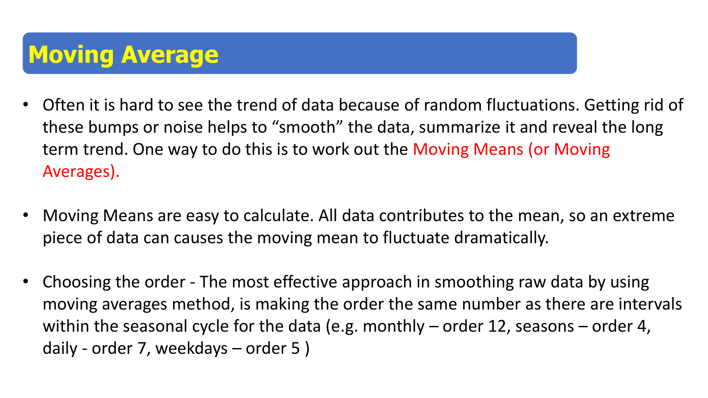


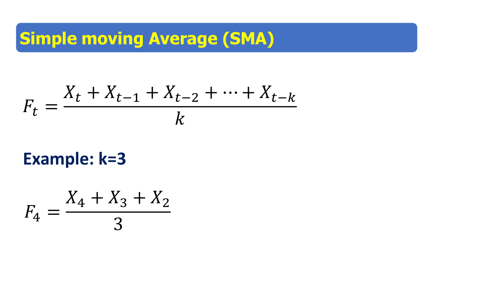
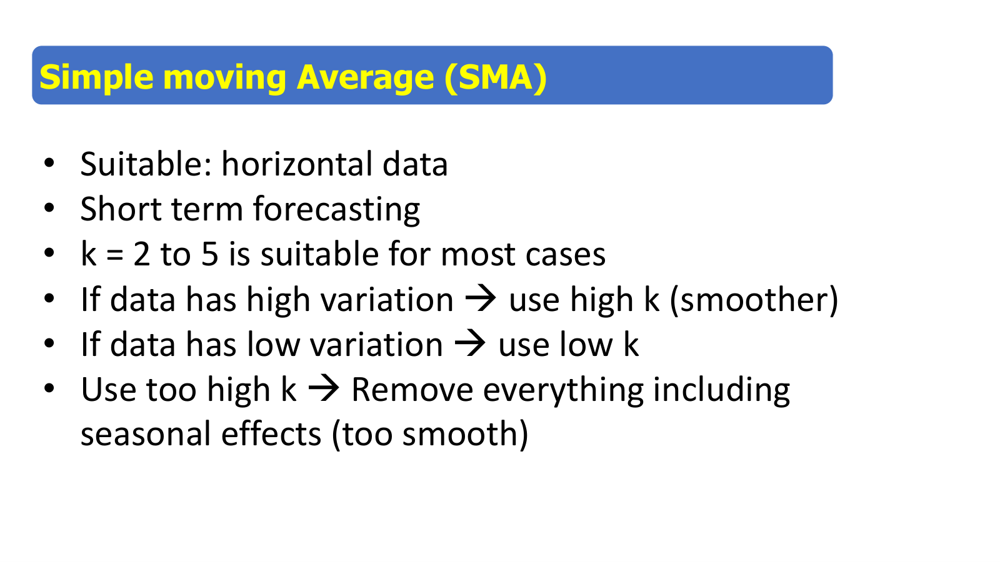
ความจำของคน: เรื่องเมื่อวานจำชัด เรื่องเมื่อปีก่อนจำได้รางเลือน แต่ไม่ได้ลืมสนิท SMA จำ 3 วันชัดเท่ากันแล้วลืมทันที EMA จำแบบคน
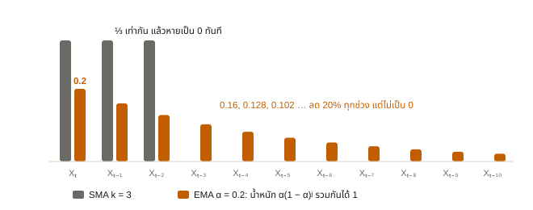
แท่งเทาคือ SMA ที่ให้ ⅓ เท่ากันแล้วหายเป็นศูนย์ทันที แท่งส้มคือ EMA ที่ให้ค่าล่าสุดมากที่สุดแล้วลดลง 20% ทุกช่วง21 เขียนเต็มได้ \(F_{10}=\alpha X_9+\alpha(1-\alpha)X_8+\alpha(1-\alpha)^2X_7+\dots\)22 ดึง \((1-\alpha)\) ออกจากพจน์ที่สองเป็นต้นไป ที่เหลือคือ \(F_9\) จึงได้รูปสั้น
ค่าพยากรณ์ใหม่ = ค่าเฉลี่ยถ่วงน้ำหนักระหว่างค่าจริงล่าสุดกับค่าพยากรณ์เดิม α ใหญ่ตามข้อมูลใหม่เร็ว α เล็กเรียบ ค่าที่นิยมคือ 0.1–0.2 น้ำหนักรวม \(\alpha\sum(1-\alpha)^j=1\) จึงเป็นค่าเฉลี่ยที่ถูกต้อง สมการนี้คือ ARIMA(0,1,1) ที่ α = 1 + θ ใน Lesson 7 ตอน 1.3
สูตรอ้างถึงตัวเอง จึงต้องมีค่าเริ่มต้น \(F_1\) ใช้ \(X_1\) หรือค่าเฉลี่ย 3–5 ค่าแรกก็ได้ ถ้าข้อมูลยาวพอจะลู่เข้าค่าเดียวกัน และ R เลือกค่าเริ่มต้นกับ α เอง23 ไฟล์ Excel ใช้ค่าเฉลี่ยสามค่าแรก \(F_1=-0.3533\)24 (หัวเรื่องของสไลด์หน้า 13 พิมพ์ "(SMA)" ที่ถูกคือ EMA)
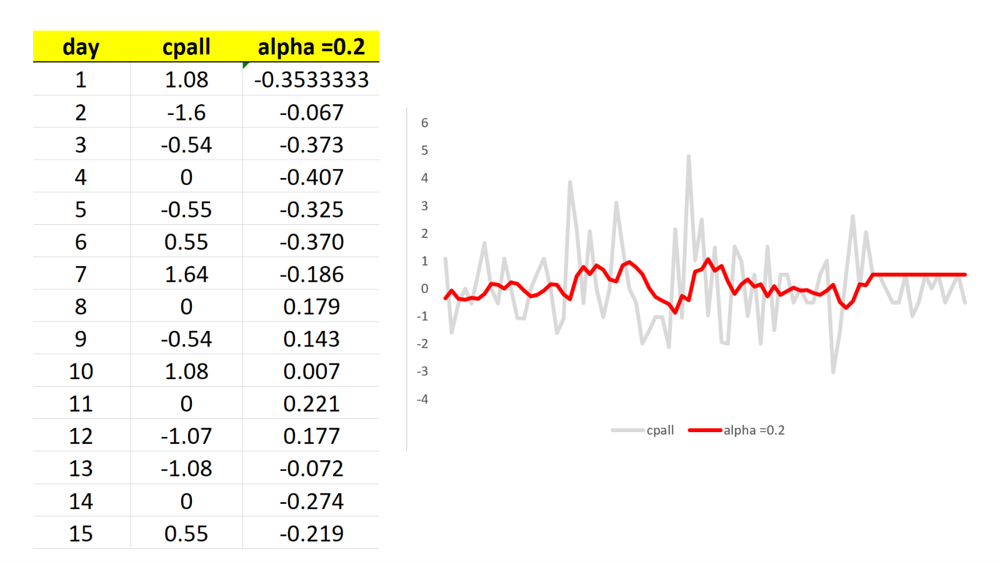
ในตารางนี้ แถวของวัน t คือค่าพยากรณ์ที่คำนวณจากข้อมูลถึงวัน t − 1 เส้น EMA แกว่งแคบกว่า SMA k = 5 เพราะ α = 0.2 ให้ค่าล่าสุดแค่ 20% การ์ดข้างล่างไล่คอลัมน์ทีละขั้น
ค่าเฉลี่ยสามวันแรก \((1.08-1.6-0.54)/3=-0.3533\)
\(0.2(1.08)+0.8(-0.3533)=0.216-0.2827=-0.067\)
\(0.2(-1.6)+0.8(-0.067)=-0.373\)
\(0.2(-0.54)+0.8(-0.373)=-0.407\)
\(X_{65}=2.04\) และ \(F_{65}=0.128\) จึงได้ \(F_{66}=0.408+0.1025=0.510\) ใช้ \(X_{65}\) ได้เพราะอยู่ใน train แต่ใช้ \(X_{66}\) ไม่ได้ ค่า 0.510 ค่าเดียวจึงพยากรณ์วันที่ 66–80 ทั้งหมด25

สไลด์เทียบสองวิธีทั้งบน train และ test ค่าที่รันจริงตรงกับสไลด์ทุกค่า
| CPALL | SMA k = 3 | EMA α = 0.2 |
|---|---|---|
| train RMSE / MAE | 1.221 / 0.953 | 1.633 / 1.299 |
| test RMSE / MAE | 1.663 / 1.586 | 0.738 / 0.543 |
บน train SMA ดูดีกว่า แต่บน test EMA ดีกว่ามาก ระหว่างสองโมเดลนี้จึงเลือก EMA26 เพราะตัดสินที่ test ตามหลักของ Lesson 2 ในคลิปอ่านค่าจาก Excel ได้ 0.789 และ 0.56527 แต่คำนวณซ้ำได้ 0.738 และ 0.543 ตรงกับสไลด์และ R
ใน R ets(train.ts, model = "ANN", alpha = 0.2) ให้ค่าพยากรณ์ 0.5105 ส่วน $fitted คือค่าใน train ซึ่ง "ไม่มีประโยชน์เท่าไหร่" R ประมาณค่าเริ่มต้นได้ −0.0336 ไม่ใช่ −0.3533 แบบ Excel ค่าจึงต่างกันในทศนิยมหลักท้าย และ forecast() แสดงช่วง 80% กับ 95%28 ถ้าไม่กำหนด α R เลือกได้ 0.0001 คือเกือบเป็นค่าเฉลี่ยคงที่ เพราะข้อมูลแนวราบที่แกว่งสุ่มพยากรณ์ได้ดีที่สุดด้วยค่าเฉลี่ยระยะยาว
library(forecast)
ema <- ets(train.ts, model = "ANN", alpha = 0.2) # ไม่ใส่ alpha ให้ R เลือก
forecast(ema, h = 15, level = 0) # level = 0 ไม่แสดงช่วงความเชื่อมั่น
fc <- forecast(ema, h = 15)$mean # $mean คือค่าพยากรณ์
accuracy(fc, test.ts)

exponential smoothing มีสามชนิด: single (หนึ่งสมการ), double หรือ Holt (สองสมการ จับ trend), triple หรือ Holt-Winters (สามสมการ จับ trend และ seasonal) Winters เป็นลูกศิษย์ของ Holt29 ใน R ets() คำสั่งเดียวครอบคลุมทั้งหมด และเลือกตัวที่ AIC ดีที่สุดให้ จึงควรเข้าใจแนวคิด แต่ให้โปรแกรมคำนวณ30
| ตำแหน่ง31 | N | A (บวก) | M (คูณ) | Ad |
|---|---|---|---|---|
| E: error | — | ขนาดคงที่ | โตตามระดับ คูณด้วย (1 + e)32 | — |
| T: trend | ไม่มี | เส้นตรง | เส้นโค้งที่ชันขึ้น | เส้นตรงที่ค่อย ๆ ชะลอ (damped) |
| S: seasonal | ไม่มี | แกว่งเท่าเดิม | แกว่งกว้างขึ้นตามระดับ | — |
Z คือให้ R เลือก CPALL ไม่มี trend และ seasonal จึงเป็น ANN33 ตำแหน่ง error ดูจากกราฟยาก ให้โปรแกรมเลือก ส่วน trend กับ seasonal ดูจากกราฟได้34 สไลด์หน้า 19 จับคู่รูปกราฟกับชื่อไว้สิบสองแบบ: ดูเส้นกลางเลือกแถว ดูคลื่นและความสูงของคลื่นเลือกคอลัมน์35 ARIMA แก้ seasonal ที่แกว่งกว้างขึ้นอีกแบบหนึ่งคือ take log36 (Lesson 7)
ติดตามรถที่กำลังวิ่ง ต้องรู้ทั้งตำแหน่ง (level) และความเร็ว (trend) ทุกครั้งที่เห็นรถใหม่ก็ปรับทั้งสองค่า

EMA พยากรณ์เป็นเส้นราบ ถ้าข้อมูลมี trend ขาขึ้น ค่าพยากรณ์จะต่ำกว่าจริงตลอด ยอดขาย 16 เดือนชุดนี้แสดงปัญหานั้นชัด37: ขึ้นจากราว 14,000 เป็น 274,515 ไม่มี seasonal โมเดลจึงเป็น \(X_t=a+bt+\varepsilon_t\)38 ระดับคงที่ μ ของ CPALL ถูกแทนด้วยเส้นตรง จึงต้องมีส่วนที่ติดตามความชันเพิ่ม
สิ่งที่สำคัญที่สุดของคาบนี้คือสมการพยากรณ์ k ช่วงข้างหน้า39 ข้อมูลถึงเวลา 50 ได้ \(F_{51}=L_{50}+T_{50}\), \(F_{52}=L_{50}+2T_{50}\) ค่าพยากรณ์จึงไม่ใช่เลขเดียวอีกต่อไป40
| level | \(L_t=\prm{\alpha}Y_t+(1-\prm{\alpha})(L_{t-1}+T_{t-1})\) ผสมค่าจริงกับตำแหน่งที่คาดไว้ (= \(F_t\)) |
| trend | \(T_t=\prm{\beta}(L_t-L_{t-1})+(1-\prm{\beta})T_{t-1}\) ผสมความชันที่เพิ่งวัดได้กับความชันเดิม |
| ลำดับ | คำนวณ L ก่อนแล้วค่อย T เพราะ T ใช้ L ที่เพิ่งได้ α, β อยู่ระหว่าง 0 ถึง 141 |
\(L_t=200\), \(T_t=5\) ได้ 205, 210, 215 จุดที่มักพลาดคือใช้ \(L_{t+k-1}\) หรือ \(T_{t+k}\) ซึ่งยังไม่มีในอนาคต ต้องใช้ค่าล่าสุดที่รู้เท่านั้น
| Holt แบบบวก (A) | Holt แบบคูณ (M) | |
|---|---|---|
| พยากรณ์ | \(L_t+kT_t\) | \(L_t\times T_t^{\,k}\)42 |
| T คือ | ความชัน (เพิ่มกี่หน่วย) | อัตราโต (1.05 = โต 5%) |
| ตัวอย่าง L = 100 | T = 10: 110, 120, 130 | T = 1.1: 110, 121, 133.1 |
| สมการ | ตามข้างบน | เปลี่ยนบวกเป็นคูณ ลบเป็นหาร43: \(L_t=\alpha Y_t+(1-\alpha)L_{t-1}T_{t-1}\), \(T_t=\beta(L_t/L_{t-1})+(1-\beta)T_{t-1}\) |
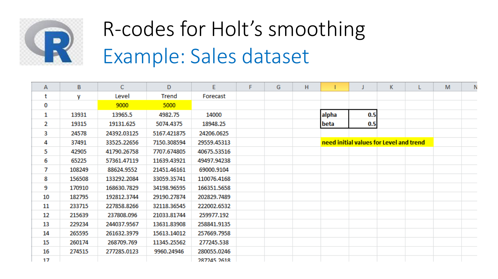
ใน Excel ใช้ α = β = 0.5 และค่าเริ่มต้น \(L_0=9000\), \(T_0=5000\) ซึ่งมาจากตัวอย่างใน YouTube และเลือกให้ \(L_0+T_0\) ใกล้ \(Y_1=13931\)44
\(L_0+T_0=14000\)
\(L_1=0.5(13931)+0.5(14000)=13965.5\) และ \(T_1=0.5(13965.5-9000)+0.5(5000)=4982.75\)
\(L_1+T_1=18948.25\)
\(L_{16}=277285.01\), \(T_{16}=9960.25\) จึงได้ \(F_{17}=287245.26\), \(F_{18}=297205.51\), \(F_{19}=307165.76\)45

R แยกผลเป็น observed, level และ slope (\(T_t\) ของแต่ละเวลา) slope สูงสุดช่วงที่ยอดขายพุ่งแล้วลดลงเมื่อยอดชะลอ จึงตอบว่าขณะนั้นข้อมูลโตเร็วแค่ไหน ให้ R เลือกเองได้ ETS(A,A,N) alpha = 0.7851 และ beta = 0.0001 (ความชันแทบไม่ปรับ)46 ค่าพยากรณ์ t = 17 ของ R (298,120) สูงกว่า Excel (287,245) เพราะ R ใช้ความชันเริ่มต้น 21,062 ตลอด ขณะที่ Excel ปรับความชันลงตามข้อมูลช่วงท้าย
สไลด์หน้า 32 มีผลจาก R รุ่นเก่าที่เลือก ETS(M,M,N) แต่ package forecast รุ่นปัจจุบันเลือก ETS(A,A,N) ถ้าข้อสอบให้ output มา ให้อ่านตาม output ที่ให้ โจทย์ฝึกท้ายหน้าเดียวกันเป็นข้อมูลรายไตรมาสที่ไตรมาส 4 สูงสุดทุกปี Holt จะพยากรณ์ไตรมาส 4 ต่ำเกินทุกปี ต้องใช้ Holt-Winters ในตอน 4
library(forecast)
data <- ts(read.table("sales.txt", h = T))
holt.additive <- ets(data, model = "AAN") # ให้ R เลือก alpha, beta
forecast(holt.additive, h = 5, level = 0)
ets(data, model = "AAN", alpha = 0.5, beta = 0.5) # กำหนดเองETS(A,A,N) Smoothing parameters: alpha = 0.7851 beta = 1e-04 Initial states: l = -30284.4432 b = 21061.963 sigma: 22291.22 AIC 370.1398 AICc 376.1398 BIC 374.0028 Point forecast t = 17–21: 298119.5 319177.6 340235.8 361294.0 382352.2
ETS(A,A,N) นี้เทียบเท่า ARIMA(0,2,2) ตารางแปลงพารามิเตอร์อยู่ใน Lesson 10 ตอน 3

อัตราการมีส่วนร่วมในกำลังแรงงานของสิงคโปร์เพิ่มเกือบเป็นเส้นตรง แต่เกิน 100 ไม่ได้ ถ้าใช้เส้นตรงต่อไปเรื่อย ๆ ค่าพยากรณ์อาจทะลุร้อย47 วิธีแก้คือ damped trend R เลือก ETS(M,Ad,N) ซึ่ง Ad มาจาก additive damped48
φ หน่วงความชัน แทนที่จะคูณ k φ = 0.959 กับ k = 15 ได้ผลรวมราว 10.9 แทน 15 ค่าพยากรณ์ 15 ปีจึงอยู่ราว 86–87 แทน 89 ในทางปฏิบัติ damped ไม่ค่อยพบ ถ้าข้อมูลไม่ได้เป็นเปอร์เซ็นต์อาจไม่ต้องใช้ ถ้าไม่แน่ใจใช้ ets() อย่างเดียวก็พอ49 ข้อมูลเดียวกันนี้กลับมาใน Lesson 10 ตอน 5 เทียบกับ ARIMA with drift
singapur <- ts(read.table("singapore.txt"), start = 1980)
holt(singapur, h = 15) # Holt ธรรมดา
holt(singapur, h = 15, damped = TRUE) # เพิ่มพารามิเตอร์ phi
ets(singapur) # ให้ R เลือกETS(M,Ad,N) alpha = 0.528 beta = 1e-04 phi = 0.959 l = 69.3963 b = 0.868 AIC 62.09 พยากรณ์ปี 2022 (15 ปีข้างหน้า): holt 89.32 holt damped 86.88 ets(M,Ad,N) 86.35
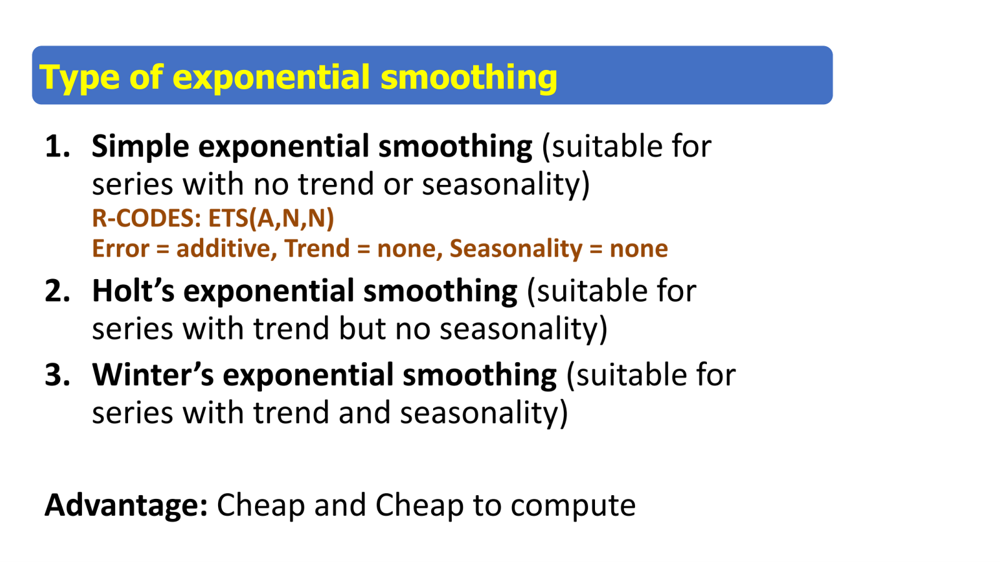
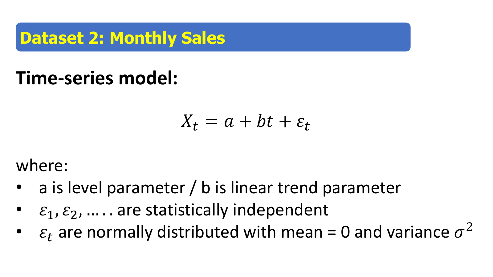
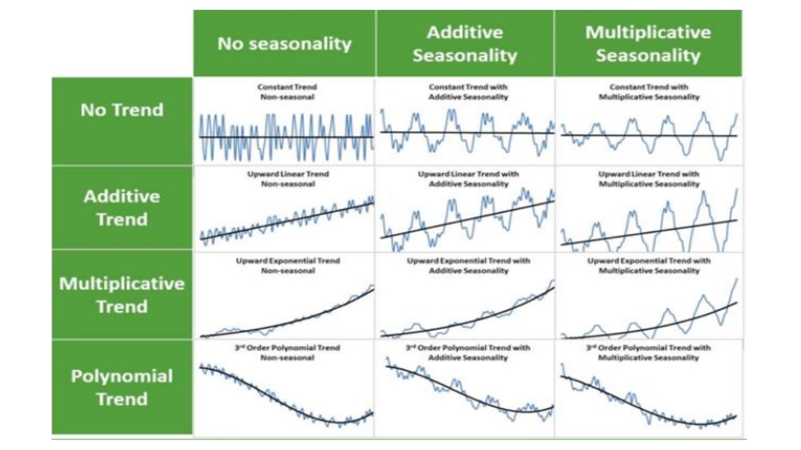
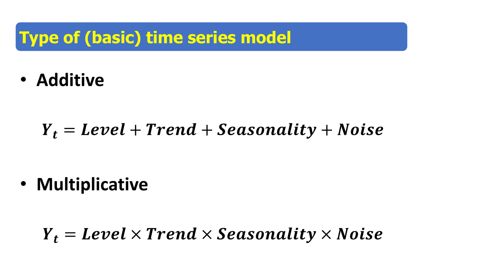
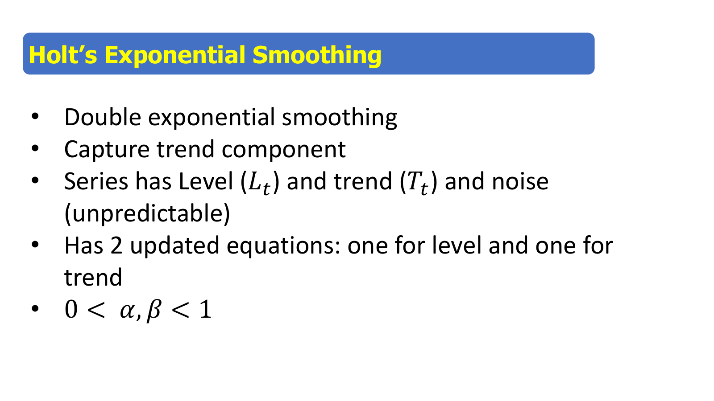
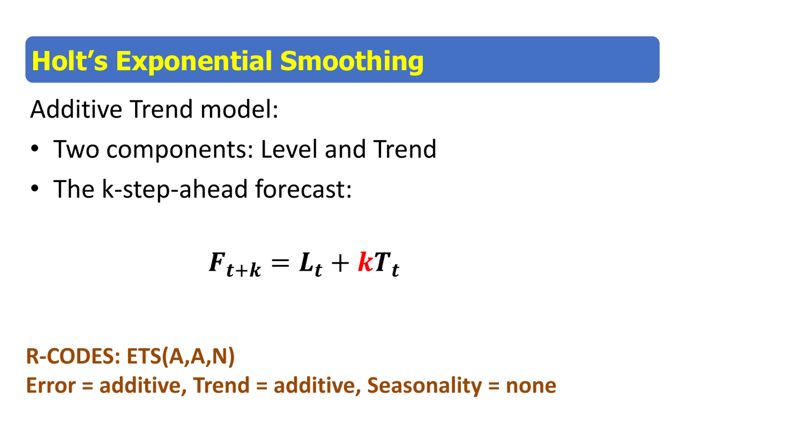


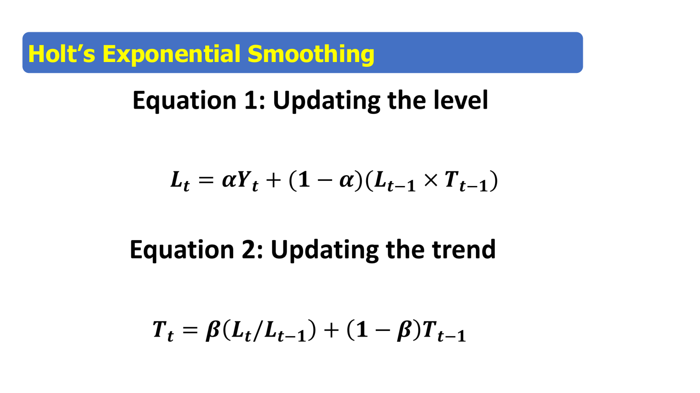


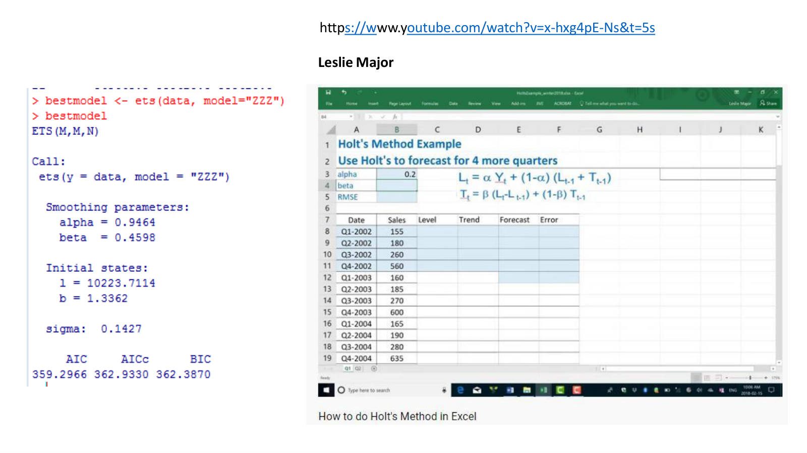
สไลด์เล่าว่า Charles C. Holt เป็นที่รู้จักจากงานของตัวเองและของลูกศิษย์ของเขา Peter Winters สรุปสั้น ๆ ว่า Winters เอาแนวคิดของ Holt มาเพิ่มองค์ประกอบ seasonal แค่นั้นเอง วิธีนี้ไม่สอนคำนวณมือเพราะมีสามสมการ50 สิ่งที่ต้องได้คือเข้าใจสมการ รู้ว่าพารามิเตอร์ตัวไหนคู่กับอะไร และอ่านผลของ R ได้
m คือความยาวรอบ (รายเดือน 12 รายไตรมาส 4)51 \(S_{t+k-m}\) คือค่า seasonal ของฤดูเดียวกันในรอบที่แล้ว เช่น พยากรณ์ธันวาคมปีหน้าใช้ seasonal ของธันวาคมล่าสุด
| α คู่กับ level | \(L_t=\alpha(Y_t-S_{t-m})+(1-\alpha)(L_{t-1}+T_{t-1})\) ใช้ค่าจริงที่ถอดผลของฤดูออกแล้ว |
| β คู่กับ trend | เหมือน Holt |
| γ คู่กับ seasonal | \(S_t=\gamma(Y_t-L_t)+(1-\gamma)S_{t-m}\) ผสมส่วนที่เกิน level ตอนนี้กับค่าฤดูเดียวกันรอบก่อน |
| φ | พารามิเตอร์หน่วงอีกตัวถ้ามี damped52 |
L = 200, T = 5, k = 2: แบบบวกที่ seasonal = −15 ได้ \(200+10-15=195\) แบบคูณที่ seasonal = 0.9 ได้ \(210\times0.9=189\) แบบคูณใช้หลักเดิม "ลบเป็นหาร บวกเป็นคูณ" ตรงส่วน seasonal ค่า seasonal แบบบวกจึงเฉลี่ยเป็น 0 แบบคูณเฉลี่ยเป็น 1 พารามิเตอร์ทุกตัวอยู่ระหว่าง 0 ถึง 1 ใกล้ 1 ปรับตามข้อมูลล่าสุดเร็ว ใกล้ 0 แทบไม่เปลี่ยน
ตัวอย่างนี้มีไว้ให้เห็นว่า ETS ต้องรู้ความยาวรอบก่อน ถ้าลืมใส่ frequency จะไม่เห็น seasonal เลย
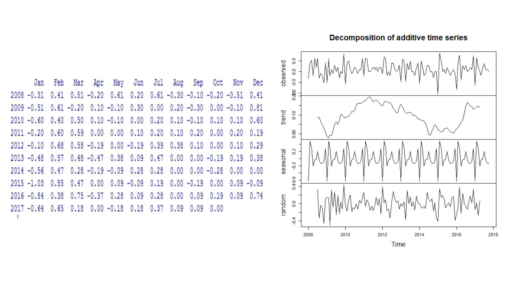
อัตราเงินเฟ้อรายเดือนของเยอรมนี53 ไม่มี trend มี seasonal และความแปรปรวนคงที่ อ่านตามเดือน: มกราคมติดลบทุกปี กุมภาพันธ์เป็นบวกทุกปี ซึ่งคือหลักฐานของ seasonal decompose ล่วงหน้าบอกว่า trend ไม่น่ามี แต่ seasonal น่าจะมี54

ข้อมูลนี้ควรเป็น ANA55 R ก็เลือก ETS(A,N,A) ผลมี α กับ γ แต่ไม่มี β เพราะไม่มี trend จึงเป็นแบบ double ไม่ใช่ triple56 α และ γ = 0.0001 แปลว่า level และ seasonal แทบไม่เปลี่ยนตลอด 10 ปี ค่า s 12 ค่ารวมกันเป็น 0 R พิมพ์ย้อนจากเดือนล่าสุด ค่าท้าย −0.6303 จึงเป็นของมกราคม
ถ้าเขียน ts(data) โดยไม่ใส่ frequency = 12 R จะได้ ETS(A,N,N) (AIC 315.63) แทน ETS(A,N,A) (AIC 214.73) เพราะ ETS ต้องรู้ความยาวรอบก่อน ข้อนี้เป็นข้อจำกัดของ ETS แต่ถ้าคิดอะไรไม่ออก ใช้ ETS ให้มันเลือกก็ได้ ขอแค่เข้าใจว่ามีพารามิเตอร์อะไร57 ข้อมูล german กลับมาใน Lesson 10 ซึ่ง auto.arima ได้ SARIMA และห้ามเทียบ AIC ของสองตระกูลนี้
germaninfl <- ts(read.table("german.txt"), start = 2008, frequency = 12)
ets(germaninfl)
plot(forecast(ets(germaninfl), h = 60)) # 60 เดือน = 5 ปีETS(A,N,A)
Smoothing parameters: alpha = 1e-04 gamma = 1e-04
Initial states: l = 0.1021
s = 0.2741 -0.0868 -0.1336 -0.1038 -0.0377 0.2009 -0.0085 -0.0111 -0.2365 0.323 0.4503 -0.6303
sigma: 0.2145 AIC 214.7276 AICc 219.4335 BIC 256.2878
รหัส model ใน ets() (สไลด์หน้า 43): SES = ZNN, Holt = ZAN, damped = ZAdN, Holt-Winters trend บวก seasonal คูณ = ZAM ถ้าใส่ ZZZ หรือไม่ใส่ R เลือกตัวที่ AIC ต่ำสุด
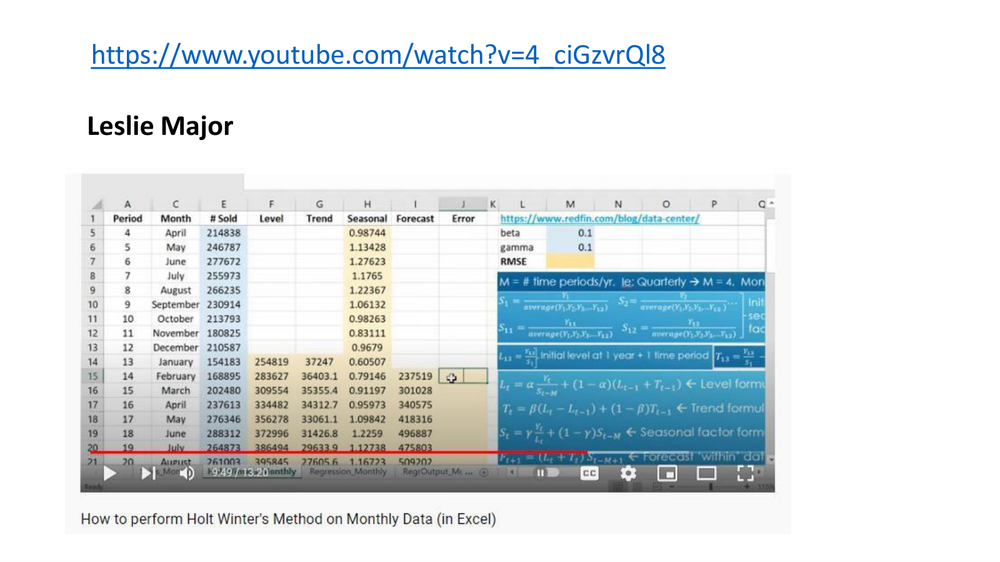
ตัวอย่าง Excel ใช้ยอดขายบ้านรายเดือน m = 12 และ seasonal แบบคูณ ค่าเริ่มต้นของ seasonal แต่ละเดือนได้จากค่าของเดือนนั้นในปีแรกหารด้วยค่าเฉลี่ยของปี ค่าพยากรณ์เมษายนคือ \((L_{16}+T_{16})\times S_4=(309554+35355.4)\times0.98744=340577\) (ตารางแสดง 340,575 ต่างเพราะปัดเศษ)


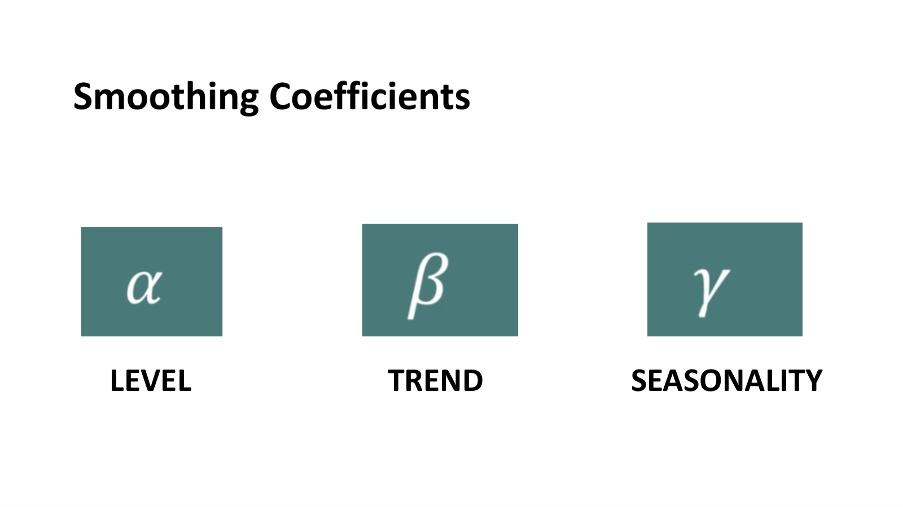

decomposition ใน R ไม่ได้ออกแบบมาเพื่อพยากรณ์ แต่ถ้าทำใน Excel ด้วย regression จะพยากรณ์ได้ และอาจดีพอ ๆ กับ ETS58 แบบ regression ดีกว่าและเป็นแบบที่ใช้สอน MBA59 วัตถุประสงค์ข้อหนึ่งคือ ประมาณผลของฤดูกาล เพื่อทำค่าที่ปรับฤดูกาลแล้ว เช่น ยอดธันวาคมสูงกว่าพฤศจิกายนทุกปี ค่าดิบบอกไม่ได้ว่าธุรกิจดีขึ้นจริงหรือเป็นแค่ผลของฤดู
| ขั้น | แบบบวก | แบบคูณ |
|---|---|---|
| 1. trend | moving average (ไม่มีสมการ) หรือ regression (มีสมการ) ทั้งสองแบบต้องหาเส้นนี้ก่อน60 | |
| 2. detrend | ข้อมูล − trend | ข้อมูล ÷ trend |
| 3. seasonal | เฉลี่ยฤดูเดียวกัน ปรับให้เฉลี่ยเป็น 0 | เฉลี่ยฤดูเดียวกัน ปรับให้เฉลี่ยเป็น 1 |
| 4. random | ข้อมูล − trend − seasonal | ข้อมูล ÷ (trend × seasonal) |
| ใช้เมื่อ | trend นิ่ง แกว่งไม่มาก | เปลี่ยนเร็ว แกว่งกว้าง61 |
สไลด์ระบุว่า ผลของฤดูกาลมักถูกปรับให้เฉลี่ยเป็น 0 สำหรับแบบบวก หรือเป็น 1 สำหรับแบบคูณ เพราะ seasonal ต้องบอกเฉพาะส่วนที่เบี่ยงจากระดับปกติ ส่วนเกินควรอยู่ใน trend ข้อจำกัดคือสมมติว่ามี seasonal index ประจำแต่ละไตรมาส ซึ่งโมเดลอื่นอาจไม่มี62 ขั้น 2 คือ detrending ใน Lesson 3 ตอน 4
ตัวอย่างนี้มีไว้ให้เห็นว่า seasonal index แบบคูณอ่านเป็นเปอร์เซ็นต์ได้ตรง ๆ และการมีสมการของ trend ทำให้พยากรณ์ได้ทันที

การผลิตเบียร์ของออสเตรเลียรายไตรมาส 72 ค่า63 มี trend ขาขึ้น ไตรมาส 4 สูงสุดและไตรมาส 2 ต่ำสุดทุกปี และระยะยอดถึงท้องกว้างขึ้น จึงค่อนไปทางแบบคูณ

regress Beer บน t = 1, …, 72 ได้ \(T_t=223.521+2.914t\) เส้นตรงนี้ยังเป็นค่าประมาณที่ไม่ดีนัก ต้องปรับด้วย seasonal64
t = 1: \(284.4/226.435=1.256\) มากกว่า 1 คือสูงกว่า trend
เฉลี่ย 18 ค่าของแต่ละไตรมาส แล้วปรับให้เฉลี่ยเป็น 1: Q1 1.0304, Q2 0.8727, Q3 0.9234, Q4 1.1736
t = 1: \(226.435\times1.0304=233.32\) และ random \(284.4/233.32=1.219\)
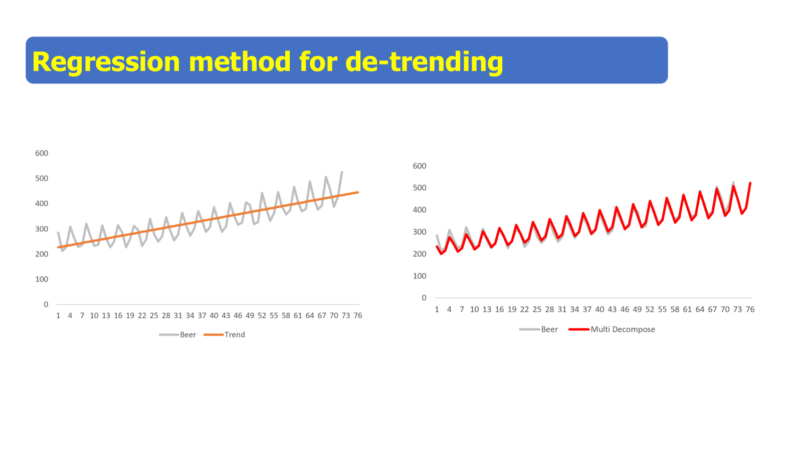
การพยากรณ์คือต่อเส้นตรงไปยังเวลาในอนาคตแล้วคูณด้วย seasonal ของไตรมาสนั้น66 เช่น Q4 ปีที่ 19: \(T_{76}=223.521+2.914(76)=444.98\) คูณ 1.1736 ได้ 522.2 แบบบวกทำเหมือนกันแต่ detrend ด้วยการลบ ได้ seasonal ในหน่วยของข้อมูล (Q2 −41.19, Q4 +57.49) แล้วบวกกับ trend67
R ใช้ขั้นตอนเดียวกัน ต่างที่ขั้นแรกหา trend ด้วย centered moving average span 4 แทน regression68 เป็นค่าเฉลี่ยของค่าเฉลี่ยอีกทีหนึ่ง69: เฉลี่ยเวลา 1–4 ได้ค่าที่ 2.5 เฉลี่ย 2–5 ได้ค่าที่ 3.5 เฉลี่ยสองค่านี้อีกครั้งได้ค่าที่ 3 ตรงเวลาที่มีข้อมูลพอดี \(x_{t-2}\) กับ \(x_{t+2}\) เป็นไตรมาสเดียวกันคนละปี ทุกไตรมาสจึงได้น้ำหนักรวม ¼ เท่ากัน ผลของฤดูหักล้างหมด เหลือแต่ trend (หลักเดียวกับตอน 1.1)
\(\tfrac18(284.4)+\tfrac14(212.8+226.9+308.4)+\tfrac18(262)=35.55+187.025+32.75=255.325\) ตรงกับ $trend ของ R
รายไตรมาสหาย 2 จุดแรกและ 2 จุดท้าย รายเดือนหาย 6 ตัวแรกและ 6 ตัวท้าย70

seasonal แบบบวกของ R คือ Qtr1 7.896, Qtr2 −40.679, Qtr3 −24.651, Qtr4 57.433 ค่าใหญ่เพราะเป็นแบบบวก ถ้าเป็นแบบคูณจะอยู่ราว 171 ตรวจมือ: random Qtr3 ปีแรก = \(226.9-255.325-(-24.651)=-3.774\) random ควรไม่มีแบบแผน ถ้ายังเห็นรอบซ้ำหรือ trend แปลว่าแยกไม่หมด (หลักเดียวกับ residual ใน Lesson 8)

seasonal แบบคูณของ R คือ 1.0238, 0.8754, 0.9233, 1.1775 ใกล้เคียงวิธี regression72 ต่างเล็กน้อยเพราะ trend ต่างกัน การทำค่าที่ปรับฤดูกาลแล้วคือหารด้วย seasonal เช่น ไตรมาส 4 ได้ 535 ปรับแล้ว \(535/1.1775=454.3\)
| regression (Excel) | centered MA (R) | |
|---|---|---|
| สมการของ trend | มี (223.521 + 2.914t) | ไม่มี |
| ค่าหัวท้าย | ครบทุกจุด | NA |
| พยากรณ์ | ต่อเส้นแล้วคูณ/บวก seasonal ได้ทันที | ไม่เหมาะ เพราะทำแค่ smoothing73 |
| trend โค้งตามข้อมูล | ไม่ (เส้นตรง) | ได้ |
regression trend ใช้ได้เมื่อ trend เป็นเส้นตรงจริง ข้อมูล Xbox ใน Class 5 ใช้วิธีเดียวกันแล้วได้ค่าใกล้ ETS(M,A,M)74 แต่ output จริงต่างกันมาก เพราะสินค้าขึ้นแล้วลง เส้นตรงจึงมองไม่เห็นขาลง รายละเอียดอยู่ใน Lesson 5 ตอน 1
beerprod <- ts(read.table("beer.txt"), freq = 4) # อย่าลืมบอกว่าเป็นรายไตรมาส
decompbeer <- decompose(beerprod, type = "additive"); plot(decompbeer)
decompbeermult <- decompose(beerprod, type = "multiplicative")
trendpattern <- filter(beerprod, filter = c(1/8, 1/4, 1/4, 1/4, 1/8), sides = 2)freq = 4 บอกว่าข้อมูลรายไตรมาส ถ้ารายเดือนใช้ 12 และ filter(..., sides = 2) คำนวณ centered moving average เองด้วยน้ำหนักข้างบน
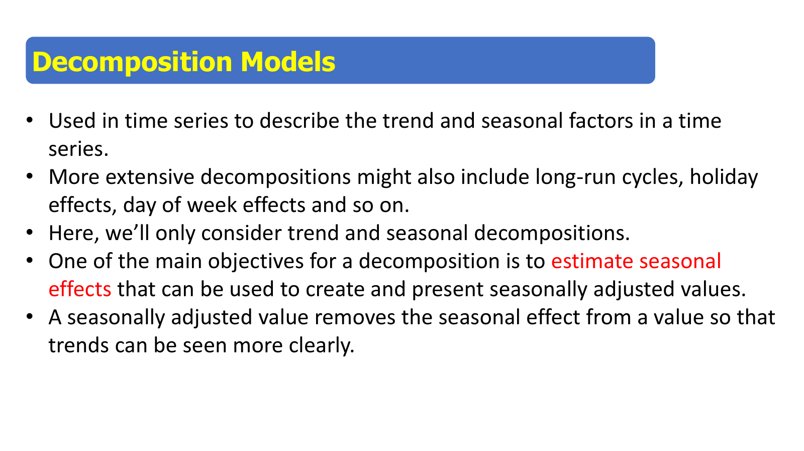
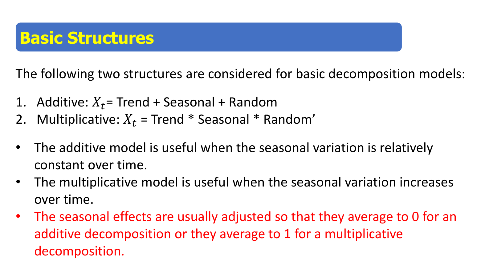


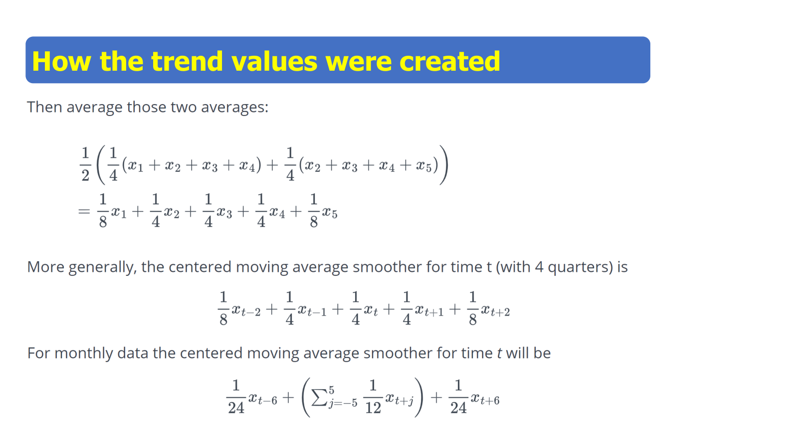
ลองฝึกต่อในแบบฝึก Lesson 4 (แนวควิซ Excel) หรืออ่านต่อ Lesson 5 — MA และ AR
ตัวเลขยกในเนื้อหาชี้มาที่รายการนี้ แต่ละรายการระบุคลาสและนาทีของคลิป พร้อมถ้อยคำในคลิปเมื่อมี
| หน้า | เนื้อหา | อยู่ในตอน |
|---|---|---|
| 1 | ปก Smoothing Methods | etc — ปก |
| 2–10 | Forecasting techniques, moving average, CPALL, SMA | ตอน 1 |
| 11–14 | EMA, เทียบ SMA กับ EMA | ตอน 2 |
| 15 | หน้าคั่น Advance Exponential Smoothing | etc — หน้าคั่น |
| 16–33 | ตระกูล exponential smoothing, ETS, Holt, Excel และ R, damped trend (Singapore) | ตอน 3 |
| 34–44 | German inflation, Holt-Winters, ets() summary, Excel | ตอน 4 |
| 45 | ลิงก์คลิป YouTube สอนพยากรณ์ด้วย Excel | etc — ลิงก์อ้างอิง |
| 46 | หน้าคั่น Decomposition Models | etc — หน้าคั่น |
| 47–58 | Decomposition, Australian beer, decompose() ใน R, centered moving average, regression method | ตอน 5 |
แหล่งอื่นที่ใช้: Class 4 ทั้งคาบ (ตอน 1–4), Class 5 ช่วง 0:00–1:04 (decomposition, Xbox) และ 2:10 (ควิซ Excel), ไฟล์ R_codes, CPALL, sales, singapore, german, beer, Smoothing Examples.xlsx และ Decompose Examples.xlsx ในโฟลเดอร์ CLASS 4